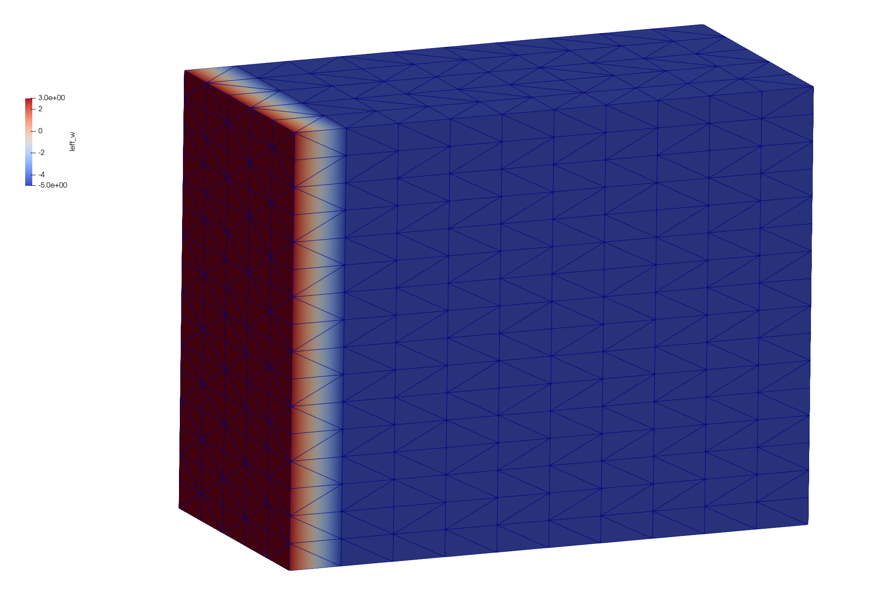
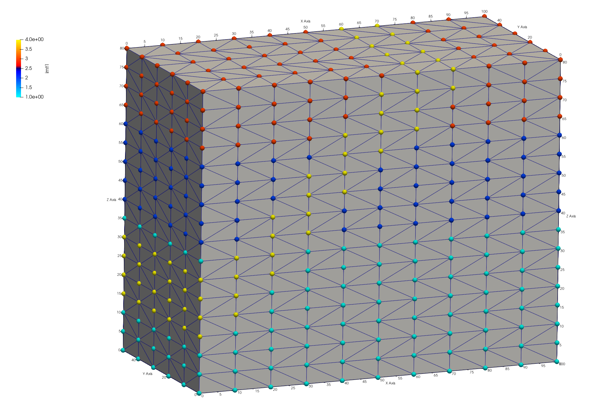

Step 4. Write FEHM Setup Files

LaGriT command file: 04_fehm_files.lgi
LaGriT output file: lagrit.out
LaGriT all run files: Folder step_04
LaGriT’s meshing tools are tailored for geologic applications and Voronoi control volume solvers. Though LaGriT can write files that are of general use, some are specifically designed for the FEHM porous flow and transport code. This example writes model setup files used by FEHM but can be modified for use in other simulators using Voronoi control volumes (FEHM, PFLOTRAN, TOUGH2).
- Use the tetrahedral mesh with materials created in Step 3.
- Use
dump/fehmto write 7 model setup files. - Locate and write a list of nodes representing a vertical well zone.
- View and check the mesh quality and defined zones.
The following model setup files will be written:
- material.zone - node zone lists for each material. Same as
dump/zone_imt - outside.zone - lists of nodes on outside boundaries such as top, bottom, and sides. Same as
dump/zone_outside - outside_vor.area - voronoi areas associated with nodes on outside boundaries
- multi_mat.zone - lists of node pairs connected across material interfaces (multi-material nodes)
- interface.zone - lists of nodes along material interfaces (for multi-material cells seldom used with FEHM)
- .stor - file with voronoi control volumes associated with each node and the sparse matrix structure. Same as
dump/storand described atstor format - .fehm - mesh coordinates and geometry in FEHM grid format. Same as
dump/coord
Read the tetrahedral mesh with materials from Example 3
Read the mesh and check for positive volumes and expected node material values. The quality command shows all cells with the same volume as expected. The cmo/printatt command is recommended for checking mesh attributes at important steps in the input file. The keyword minmax will display the min and max values of mesh attributes for easy confirmation of values. As expected, the node attribute has material values 1 to 4. (Created in Step 3).
Note. You can add a finish command after this section and exit early to be sure all is as expected. Then comment out or remove the temporary finish.
read / avs / tet_interp_materials.inp / mo_tet
quality
cmo/printatt/mo_tet/imt minmax
---------------------------------------
All elements have volume 8.3333333E+01
---------------------------------------
4800 total elements evaluated.
ATTRIBUTE NAME MIN MAX DIFFERENCE LENGTH
imt1 1 4 3 1122
The following commands are almost always used in preparation of writing FEHM model files. They are not always needed but using them will cause no harm. It is good practice to include in case they are needed.
-
Set cell colors to 1. FEHM uses properties assigned to the voronoi volumes around the mesh vertices (nodes). Though cell colors are better for images, they are not used in FEHM simulations. It is good practice to set the element attribute itetclr to 1. This avoids routines looking for multi-material elements.
-
Reset the itp array when materials are changed. This array is important to some routines.
-
The
resetpts/parentcommand will remove the parent-child relationship is established in the settets command. -
Sometimes during the meshing process there will be duplicate or double-defined nodes created. Use the
filtercommand to find and tag nodes asdudded. -
IMPORTANT: Nodes tagged for removal will not be deleted from the mesh object until
rmpoint/compressis called. This will remove any dudded nodes and adjust the connectivity.
cmo/select/mo_tet
cmo/setatt/mo_tet itetclr 1
resetpts/itp
cmo/select/mo_tet
resetpts/parent
filter/1,0,0
rmpoint/compress
Write default FEHM files
By default, all 7 FEHM files are written with rootname “tet”.
dump/fehm/ tet /mo_tet/ keepatt
dump/avs/tet_fehm.inp/mo_tet
Note: We normally do not use multiple material regions for FEHM so the interface.zone will be empty. (If itetclr=1 and resetpts/itp was called). If the node imt materials are a single value, the multi_mat.zone will also be empty.
-rw-rw-r-- 1 tamiller sft 372523 Apr 2 18:29 step_04/tet.fehmn -rw-rw-r-- 1 tamiller sft 203060 Apr 2 18:29 step_04/tet.stor -rw-rw-r-- 1 tamiller sft 12486 Apr 2 18:29 step_04/tet_material.zone -rw-rw-r-- 1 tamiller sft 8067 Apr 2 18:29 step_04/tet_outside.zone -rw-rw-r-- 1 tamiller sft 45739 Apr 2 18:29 step_04/tet_outside_vor.area -rw-rw-r-- 1 tamiller sft 32600 Apr 2 18:29 step_04/tet_multi_mat.zone -rw-rw-r-- 1 tamiller sft 0 Apr 2 18:28 step_04/tet_interface.zone
The _material.zone file contains zones listing node ids for each integer value found in the mesh imt attribute. This is a single file separated by id, “nnum” and total for each list. See right image below.
The keepatt keyword will keep attributes normally deleted after writing files. The 6 outside attribute names are added to the mesh object with the names and integer id based on normal directions:
- 1 = top = top = positive z direction (0,0,1)
- 2 = bottom = bottom = negative z direction (0,0,-1)
- 3 = left_w = left or west = negative x direction (-1,0,0)
- 4 = front_s = front or south = negative y direction (0,-1,0)
- 5 = right_e = right or east = positive x direction (1,0,0)
- 6 = back_n = back or north = positive y direction (0,1,0)
Note: A node can occur in multiple zones. For instance, a node located on a top corner of the mesh can be found in zones for top, front_s, and left_w. See left image below.
Paraview images showing mesh node attributes w_left mesh boundary (left) and node imt materials (right)


{kind=link}
{kind=link}
The output from the dump/fehm command generates output that is useful for checking the final mesh and to share in reports.
The following is a table reporting the node count for each material. In this case the bottom layer material 1 has the most nodes and the fault material 4 has the fewest as expected.
*********dump_material_lists******** Minimum material ID value = 1 Maximum material ID value = 4 Total possible materials = 4 Material 1 has 468 nodes. #nodes/nnodes is 0.417112290859 Material 2 has 270 nodes. #nodes/nnodes is 0.240641713142 Material 3 has 204 nodes. #nodes/nnodes is 0.181818187237 Material 4 has 180 nodes. #nodes/nnodes is 0.160427808762
The routine AMatbld3d_stor generates a report summary regarding the voronoi volumes and number of coefficients.
AMatbld3d_stor: *****Zero Negative Coefficients ****** AMatbld3d_stor: Number of 'zero' (< compress_eps) coefs 0 AMatbld3d_stor: npoints = 1122 ncoefs = 7144 AMatbld3d_stor: Number of unique coefs = 6 AMatbld3d_stor: Maximum num. connections to a node = 7 AMatbld3d_stor: Volume min = 6.2500000E+01 AMatbld3d_stor: Volume max = 5.0000000E+02
Negative coefficients can occur on non-convex boundaries or with unstructured complex meshes. If they occur, these negative coefficients are stored in a node attribute named ccoef. Viewing this attribute can provide help in finding areas of the mesh that need adjustment. It is possible that a mesh has ccoef values at or very close to zero, in which case they can be ignored. The following pset commands can help find ccoef values of concern.
Note. The cmo/addatt command is called but will not be used if the AMatbld3d_stor routine creates it. We create it just in case it does not exist so the commands using it do not fail with an Error.
cmo/addatt/mo_tet/ccoef/VDOUBLE/scalar/nnodes/linear/
cmo select mo_tet
pset pin attribute itp 1,0,0 lt 10
pset pneg attribute ccoef 1,0,0 lt -.0001
pset pBAD inter pin pneg
cmo printatt mo_tet ccoef minmax
cmo printatt mo_tet -all- minmax
Create zone file for vertical well
Zones for simulations can be created and written by using the pset commands. In this example a single column of nodes is selected to represent a well. There are numerous ways to create a set, in this example we use a geometric region in box shape. A cylinder would also work.
Regions are defined by surfaces, here we use a box surface around the node column at 50,10 X,Y. The region is defined as an inside the box surface but can be combined with other surfaces for more complex regions. A pset is formed of all points within the r_bx region and written to a zone file.
Write the list of nodes to a zone file Assign a zone number larger than max material
cmo select mo_tet
surface / s_box / reflect / box / 49.5 19.5 -1. / 50.5 20.5 100.
region/ r_box / le s_box
pset/pwell/ region / r_box
# check extents of the well nodes
cmo/printatt/mo_tet/-xyz/ minmax/ pset,get,pwell
pset/pwell/ zone / tet_well_nodes.zone / ascii / 11
There should be 13 nodes found within the region. Check the xyz extents to see that one column is selected at the intended elevations.
THE PSET pwell HAS 13 POINTS cmo/printatt/mo_tet/-xyz-/minmax/pset,get,pwell ATTRIBUTE NAME MIN MAX DIFFERENCE LENGTH xic 5.000000000E+01 5.000000000E+01 0.000000000E+00 1122 yic 2.000000000E+01 2.000000000E+01 0.000000000E+00 1122 zic 2.000000000E+01 8.000000000E+01 6.000000000E+01 1122
Add Mesh Attributes for Mesh Views
When inspecting the mesh and to create informative figures, it helps to add attributes. For this example, a node attribute named iwell is created and assigned the value 11. The elevation is nice to see and is created by copying the zic attribute to a new attribute named elev.
cmo/addatt/mo_tet iwell/VINT/scalar/nnodes/linear/permanent//0
cmo/setatt/mo_tet/ iwell /pset,get,pwell/ 11
cmo/printatt/mo_tet/ iwell/ minmax
cmo/addatt/mo_tet elev/VDOUBLE/scalar/nnodes/
cmo/copyatt/ mo_tet mo_tet / elev zic
cmo/set_id/mo_tet/node/ id_node
dump/avs/tet_attributes.inp/ mo_tet
cmo/printatt/mo_tet/-all- minmax
cmo/status/mo_tet
The command cmo/printatt is used with the minmax keyword to check attributes and values in the mesh object. In this example, added attributes include the 6 boundary directions, iwell, elev, and id_node.
ATTRIBUTE NAME MIN MAX DIFFERENCE LENGTH -def- 0.000000000E+00 0.000000000E+00 0.000000000E+00 1122 scalar 1 1 0 1 vector 3 3 0 1 nnodes 1122 1122 0 1 nedges 0 0 0 1 nfaces 0 0 0 1 nelements 4800 4800 0 1 ... imt1 1 4 3 1122 itp1 0 10 10 1122 icr1 0 0 0 1122 isn1 0 0 0 1122 xic 0.000000000E+00 1.000000000E+02 1.000000000E+02 1122 yic 0.000000000E+00 5.000000000E+01 5.000000000E+01 1122 zic 0.000000000E+00 8.000000000E+01 8.000000000E+01 1122 itetclr 1 1 0 4800 ... top -5 1 6 1122 bottom -5 2 7 1122 left_w -5 3 8 1122 right_e -5 5 10 1122 back_n -5 6 11 1122 front_s -5 4 9 1122 ccoef 0.000000000E+00 0.000000000E+00 0.000000000E+00 1122 ncon50 2500 2500 0 1 nconbnd 1 1 0 1 icontab 0 2 2 2500 iwell 0 11 11 1122 elev 0.000000000E+00 8.000000000E+01 8.000000000E+01 1122 id_node 1 1122 1121 1122
Check Well Zone
It can be difficult to view mesh nodes within a mesh, it helps to write the points as a separate view file. The mesh nodes (without elements) are copied to a motmp mesh object which has all nodes removed except the well nodes. These can be written to any file format, but the AVS UCD pnt type is recognized by Paraview for easier point displays. This is part of the dump/avs options that can be set after the mesh object name.
These options are provided to enable a user the flexibility of writing ASCII files with desired information. For this example, “1 3 1 0 0” means 1= nodes are written, 3 = elements are written of type “pnt”, 1 = node attributes are written, 0 = cell attributes are not written, and 0 = model attributes are not written.
cmo/create/motmp
copypts/motmp/mo_tet
cmo/select/motmp
pset/pduds/attribute iwell/1,0,0/ ne 11
rmpoint/pset,get,pduds
rmpoint/compress
dump/avs/tet_well_pnts.inp/ motmp / 1 3 1 0 0
cmo/printatt/motmp/-all- minmax
These Paraview images show the mesh clipped to the well (left) and the well nodes (right). Check the well nodes are located correctly with respect to the mesh materials. Use Paraview to Query a well node to check attributes such as imt material and elev. Note when the well points are subset from the full mesh, the node ID changes but the attribute node_id has the original mesh node ID saved.
{kind=link}
finish
Always end a session or a file with the finish command.
finish
Snapshots of Paraview Sessions
This snapshot of the Paraview session shows settings for viewing the clipped mesh and well points.
{kind=link}
finish
Always end a session or a file with the finish command and a line return after the finish command. The command line parser will not parse a command without a line return.
finish